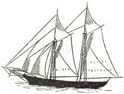

 Just lately returned from a journey out beyond the western seas, her majestie's H.M.S. Scurvy was attacked whist a-whaling.
Her crew, having just been a rendering a whale, were taken upon by the terrible apparition of the seas, which having dined upon the fo'ksle, moved aft with five million hands and were only fended off by the cook with his special chili recipe!
Hastily a-drawn be this picture of the deadly kraken, horns and all! Hear the tales of adventure that have been a-seen by the brave men of H.M.S. Scurvy with it's encounter of the deadly beast. Make sure to bring yer smelling salts to revive the ladies from fits o' faintin!
If you be a sailin' without Dr. Cahill, then you be either high adventuresome, or a fool. How will you fend off a kraken? With yer hands? A skupple? A marlinspike? Dr. Cahill have him years 'o experience, and a debonaire appearance to boot!
Many a land-lubber be thinkin' that the kraken be posessin' some kind of fur, and can be taught to sit, play a-fetch, and wilst allow a nice belly rubbin'. Nigh! The kraken be none of those things! It be a terrible creature with fifteen hundred arms and ten thousand eyes. If you be a-seein' a kraken in yer neighboarhood, do not be attempting to feed it table scraps and teach it tricks.